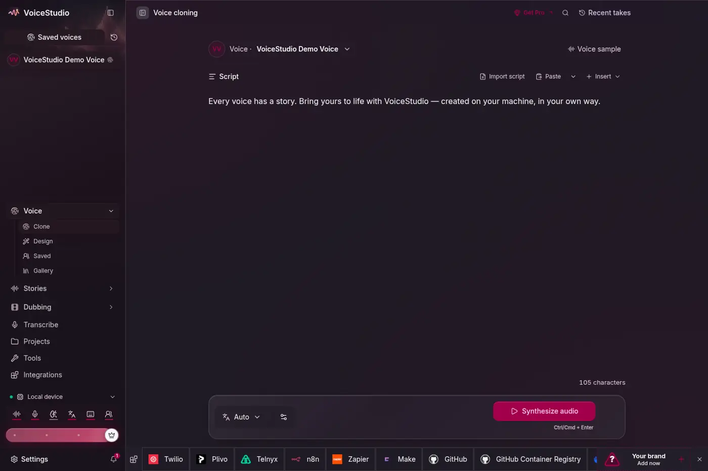
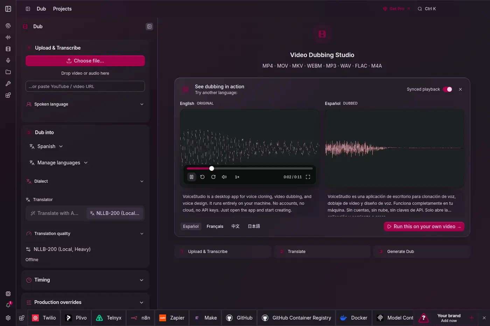

仓库数据（2026-10-27 15:15 UTC+8，GitHub API）：★ 89,957、fork 9,910、开放 issue 68；2026-04-10 建库，最新版本 v0.5.7（2026-10-26 22:59 UTC+8 发布），主要语言 Python。
它是什么
VoiceStudio 是一个本地优先的语音制作应用：Electron 做桌面与网页 UI，FastAPI 做后端，语音模型下载到本机运行。README 原话是“Local workflows run on your hardware. Remote services are optional; usage analytics requires consent.”（本地工作流在你的硬件上运行，远程服务可选，使用统计需经同意。）
它把 ElevenLabs 那一整套付费功能拆成了可以本地完成的几块：
| 功能 | 说明 |
|---|---|
| 声音克隆 | 选一个声音或上传一段干净的参考录音，输入文字即可生成；参考片段要有转写文本（没有的话会先自动跑一次 Whisper） |
| 声音设计 | 用文字描述想要的嗓音，生成新声音 |
| 视频配音 | 提取音频 + 人声分离 → 转写 → 翻译（可接 LLM，默认 6 路并发） → 按时间轴逐段合成 → 混音导出 |
| 听写 | 悬浮窗实时听写（sherpa-onnx） |
| 转写 / 说话人分离 / 人声分离 | WhisperX（默认）、Faster-Whisper、MLX Whisper、Parakeet、Moonshine、FunASR 等 |
| 故事 / 有声书 / 批处理 | 长文本分块合成、批量队列、可复用“配方”与监视文件夹 |
| 集成 | 本地 API、MCP 服务器、agent skill（npx skills add debpalash/VoiceStudio） |
| AI 水印 | 功能目录中列出“AI Watermark”，后处理阶段加水印 |

用到的模型
- 默认 TTS：VoiceStudio 引擎 = k2-fsa/OmniVoice（作者 Han Zhu；描述中的“646 种语言”指它）。代码 Apache-2.0，但据仓库 LICENSE-NOTICE，预训练权重是 CC-BY-NC（非商用），音频 tokenizer 还另带 Boson Higgs Audio 2 与 Meta Llama 社区条款。
- 可选 TTS 引擎：CosyVoice 3（含 GGUF/Vulkan）、IndexTTS 2.5、VoxCPM2、GPT-SoVITS、MOSS-TTS-v1.5 / Nano、dots.tts、Confucius4-TTS、KittenTTS、MLX-Audio、sherpa-onnx、supertonic3、pockettts、audiocpp、OmniVoice GGUF 等。
- ASR：WhisperX（默认）、Faster-Whisper、MLX Whisper、PyTorch Whisper、Parakeet TDT（v3 有 MLX 版）、Moonshine、FunASR、sherpa-onnx，也可接 OpenAI 兼容服务器。
- 每个模型的许可单独记录在 Model Manager 里（商用模型使用、商用输出、再分发、声音/录音同意四项分开标注），“未知”既不代表允许，也不代表禁止。
硬件要求
- NVIDIA GPU（Windows/Linux）：CUDA 加速；可选 FlashInfer 内核（约 2 倍，需额外显存）。
- Apple Silicon M1–M5：Metal（MPS）加速；官方性能数据在 16 GB M2 上测得。
- AMD：Windows 上默认 CPU，可选 ROCm；CosyVoice GGUF 可走 Vulkan（RX 6700 XT 验证）。
- 无独显：CPU 可用但更慢，安装小号 CPU 版 PyTorch，约需 5 GB 磁盘。
- Intel Mac 只能当 UI、连远程后端；Windows on ARM 实验性；Android 10+ / iOS 17+ 为预览版，模型在手机上离线运行。
- 性能提示：首次生成最慢（懒加载约 8 秒）；16 GB 统一内存机器上内存压力会让后端被杀；GPU 驱动问题会静默退回 CPU（慢 10–50 倍），设置里可查当前设备。
和 ElevenLabs 比
| VoiceStudio | ElevenLabs | |
|---|---|---|
| 部署 | 本机（或自建后端） | 云服务 |
| 费用 | 应用免费（AGPL）；闭源嵌入需商业许可，另有 Pro 功能 | 订阅 / 按字符计费 |
| 隐私 | 音频与文本不出本机（远程服务可选） | 上传到服务商 |
| 商用 | 应用可商用，但默认模型权重 CC-BY-NC，商用要换引擎并逐个核对模型许可 | 按付费计划授予输出商用权 |
| 质量与效率 | 取决于所选开源引擎和你的硬件；本页未做实测 | 托管的成熟模型，速度稳定 |
| 可扩展 | 十几种引擎可换，本地 API + MCP | 官方 API |
“平替”是推文的说法；README 本身只在 GitHub 简介里称“fully-local ElevenLabs alternative”。本站没有安装运行或对比音质（盒子磁盘紧张，且未经授权的声音克隆不宜随手测试）。
注意事项（伦理与法律）
- README 原话：“Clone voices only with permission.”（只在获得许可时克隆声音。）Model Manager 会把“声音/录音同意”作为单独一项标注，但 LICENSE-NOTICE 明说可选的审阅流程“不会核实声音同意”——是否取得同意要由使用者自己负责。
- 应用许可 ≠ 模型/输出许可：“Model weights, tokenizers, voices and generated-output conditions are separate; a paid app licence does not grant those rights.”默认 OmniVoice 权重 CC-BY-NC，意味着用默认引擎做商业配音存在风险；初始的许可清单“不声称任何商业许可”。
- AGPL 网络条款：改了 VoiceStudio 并通过网络提供给他人，必须向这些用户开放修改后的完整源码；想闭源嵌入要买商业许可。贡献者需签 CLA，把贡献授权给 Yupcha Softwares。
- 捆绑的 PyAV 15.1.0 wheel 内含 FFmpeg 与 x264/x265，再分发要求尚未厘清（仓库有专门审计文档）。
- 界面内有“Get Pro”入口，部分功能属于付费版。
- 线索推文说“一天涨了 2301 星”，这个数字来自 GitHub 趋势榜，本站无法回溯核实；目前总星数约 9 万。
- 仓库另有官方简体中文 README（docs/readme/README_CN.md），第三方中文分支 bayshier/voicestudio-zh（AGPL-3.0）也在维护中文版。
附录：README 全文中译
译自 debpalash/VoiceStudio README.md（2026-10-27 读取）。Copyright 2024-present Palash Debnath and VoiceStudio contributors，GNU AGPL-3.0；本译文同样以 AGPL-3.0 发布，系翻译修改版。徽章、头像墙和截图从略，命令保持原样。
展开 README 译文
VoiceStudio
开源的声音克隆、声音设计、视频配音、听写、转写与有声书制作，支持 646 种语言。
官网 · 下载 · 快速开始 · 文档 · Discord · 简体中文 · 日本語
（动图：Electron 应用导览——声音克隆、声音设计、配音和模型管理。）
你的声音。你的工作流。
| 创作 | 制作 | 连接 |
|---|---|---|
| 克隆一个声音或设计你自己的声音 | 用卡准时间的语音给视频配音 | 给智能体用的本地 API 与 MCP |
| 用悬浮小窗听写 | 故事、有声书与批处理任务 | 可复用的配方与监视文件夹 |
从 VoiceStudio 开始（默认引擎，由 k2-fsa/OmniVoice 驱动），或选择其他引擎。见“功能与引擎目录”。
本地工作流在你的硬件上运行。远程服务是可选的；使用统计需要你的同意。
（折叠区“浏览各工作区”：声音克隆、视频配音、声音设计、本地模型四张截图，以及桌面工作区截图。）
OmniVoice GGUF 源码构建在 Windows 和 Linux 上可选使用 Vulkan；构建要求、CPU 回退和设备覆盖见原生引擎指南。
快速开始
一条命令安装（macOS / Linux）
# 最新的 Electron 发布版
curl -fsSL https://voicestudio.sh/install | sh
# 指定某个已发布的 Electron 版本（替换 X.Y.Z）
curl -fsSL https://voicestudio.sh/install | sh -s -- --version X.Y.Z
# 构建当前 main 分支并安装桌面应用
curl -fsSL https://voicestudio.sh/install | sh -s -- --main
# 卸载应用，保留你的数据
curl -fsSL https://voicestudio.sh/install | sh -s -- --uninstall在 Windows 上，于 PowerShell 中运行 irm https://voicestudio.sh/install | iex。
如果 voicestudio.sh/install 无法访问或返回 404，可以直接从仓库运行同一个脚本，或者克隆仓库后运行 scripts/install.sh：
curl -fsSL https://raw.githubusercontent.com/debpalash/VoiceStudio/main/scripts/install.sh | sh下载发布版需要 curl 和一个 SHA-256 工具。--main 需要 Git、Node.js 22+、Bun、Rust/Cargo 和平台构建工具；见“安装器前置条件与行为”。安装器会保留你的设置、项目和模型。旧版本必须包含 Electron 安装包；它绝不会回退到已归档的 Tauri 构建。
也可以从 Releases 下载（macOS .dmg、Windows .exe、Linux .AppImage 或 .deb、Android .apk、iPhone .ipa；或在 Linux 上 sudo snap install voicestudio），并按你的平台指南操作：
macOS · Windows · Linux · Docker · Android 和 iPhone
| 硬件 | 支持情况 |
|---|---|
| NVIDIA GPU（Windows / Linux） | CUDA 加速 |
| AMD Radeon / 受支持的 Ryzen AI（Windows） | 默认 CPU；针对 AMD 的 Windows 11 硬件矩阵提供可选的 Windows ROCm 设置。安装程序会区分“包修复”与“主机故障”；请先手动安装 VC++ 运行库。可选引擎有各自的限制；Vulkan 引擎保留自己的运行时。 |
| Apple Silicon（M1–M5） | Metal（MPS）加速 |
| AMD GPU | 可选的原生 CosyVoice GGUF 在社区运行时以 Vulkan 构建时可使用 Vulkan；已在 RX 6700 XT 上验证（设置） |
| 无独立显卡（Intel/AMD 集显、旧电脑） | 完全可在 CPU 上使用，但更慢；安装程序会安装小号的 CPU 版 PyTorch（约需 5 GB 可用磁盘） |
| Windows on ARM（骁龙 X 等） | 实验性，验证待定：原生 ARM64 应用，x64 Python 后端在模拟下运行，仅 CPU |
| Intel Mac | 仅应用 UI；需连接远程后端（原因） |
| Android 手机（Android 10+） | 预览版：模型在手机上运行，下载后可离线使用（安装） |
| iPhone 和 iPad（iOS 17+） | 预览版：模型在设备上运行；用你的 Apple ID 侧载 IPA（安装） |
打开声音克隆，选择一个声音或添加一段干净的参考录音，输入文本，然后生成。出现提示时安装所需模型。硬件需求因引擎而异；见“性能”。
用提示词安装
粘贴到你的编码智能体（Claude Code、Codex、Cursor……）：
Install the VoiceStudio Electron app on this device and verify it works, following
https://github.com/debpalash/VoiceStudio/blob/main/docs/install/agent.md（提示词大意：按照该文档在本设备上安装 VoiceStudio Electron 应用并验证其可用。）
智能体指南涵盖硬件检测、复用已有数据、下载模型前先询问，以及一次测试生成。支持 skills 的智能体也可以运行 npx skills add debpalash/VoiceStudio。
从源码运行 Electron 预览版（折叠区）
git clone https://github.com/debpalash/VoiceStudio.git
cd VoiceStudio
bun install
bun run setup:api # 启动 Electron 前先准备 Python 依赖
bun run dev前置条件和后端配置见 Electron 设置文档。
用 bun run smoke-test 构建并启动一个隔离的打包版 Electron 应用。加上 -- --install 可进行联网的托管运行时安装检查。
Electron 是唯一的桌面应用和网页 UI。0.5.3 版是最后一个 Tauri 版本。现有 Tauri 用户必须单独安装 Electron 版。已退役的 Tauri 外壳和旧版 UI 入口已被移除。
文档
| 需要 | 从这里开始 |
|---|---|
| 安装帮助 | 故障排除 · 模型下载 |
| 模型与音质 | 引擎指南 · whisper.cpp ASR · 基准测试 |
| 集成 | 本地 API · MCP · 示例 |
| 手机应用（预览版，离线运行） | iOS 和 Android |
| 开发 | 贡献指南（首个 PR 的 CLA 签署说明）· Electron · 更新日志 |
智能体技能：npx skills add debpalash/VoiceStudio——音频工作流选 voicestudio，仓库维护选 voicestudio-maintainer。
团队
核心团队：Palash Debnath（创建者、核心团队，palash.dev · GitHub · X）；Shimul Debnath（核心团队，shimul.me · GitHub · X）。
贡献者：（头像墙从略）感谢每一位提交代码、报告、翻译和想法的人。查看全部贡献者 · 参与贡献
赞助
赞助资金用于维护者的时间、开发工具、发布基础设施和测试硬件；它换来的是致谢，而不是功能。
GitHub Sponsors · Ko-fi · PayPal · 档位与致谢 · 申请致谢
许可与负责任的使用
AGPL-3.0 覆盖本应用，包括在其条件下的商业使用。模型权重、tokenizer、声音和生成输出的条件是分开的；付费的应用许可并不授予这些权利。只在获得许可时克隆声音。Model Manager 现在会显示来自共享清单的、带版本的模型来源声明、证据链接和尚未解决的审查缺口。其可选的“已审阅文件预览”不会对普通下载做强制，也不认证商业许可。见许可详情（LICENSE-NOTICE.md）。